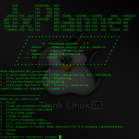
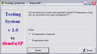

Here you will be able to download all my free and non-profit program. Basically they were written for oun use or for the practice of programming. However, some programs may well cause you concern.
 | Vertex Engine - a small OpenGL application for visualization of material mechanics. Application not completed and is of interest only as a symbiosis of OpenGL, SDL, guichan and other libraries in vivo example. Application completely cross platform. The archive contains the source code, executables for Windows and Linux, a presentation in Russian. Used libraries: OpenGL, SDL, guichan, libxml2, libpng |
 | dx Memory Manager is a programm, that emulates work of operation system memory manager Interface is only in english Released algorithms: - First fit - Worst fit - Best fit |
|  | dxPlanner is a software, that simulates the operation system processes planner. It was initially created as laboratory work at Gomel State Technical University named after aircraft designer Pavel Sukhoi. Released algorithms: - First Come First Serve - Priority Round Robbin - Non priority Round Robbin - Shortest Job First Have only english user interface |
 | Application from the category of "trifles to facilitate our lives." Quite often the task bar stoned "unnecessary" applications. That is, they are certainly needed, but should hang in the background, rather than on the task bar and should simply not interfere with the user. This program allows you to hide / show any application. The program also requires no installation |
|  | Test system with the source. Questions with answers are stored in INI-file. To pass for passing the test program said the number of right and wrong answers, as well as the percentage ratio. |
 | Sometimes you want to do compact disk autorun using HTML pages, but not using a web browser by default (because it needs a unique, beautiful design, or a powerful soundtrack). If there is no time to write their programs, or you reluctant to choose a beautiful and comfortable design - that this program for you. The program is user-friendly interface and built-Media, Opportunity close to Winamp 'bathroom. Possible settings: changing icons and applications on behalf of the task bar, changing the initial pages, fully customizable interface language, changing the order of the buttons on the main panel, the pronunciation of basic voice commands (runs on Windows NT, 2k, XP, Win9x with SAPI SDK), setting Media (just see default.dtp file). It is also possible to search phrases on the current page and use the clipboard. |
 | Normal engineering calculator. Unlike standard Windows calculator has a pleasant appearance and a more convenient system to work with trigonometry. |